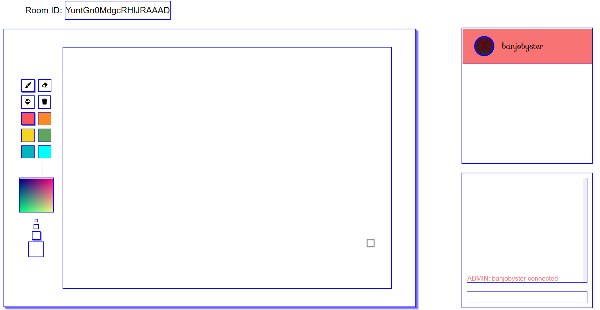
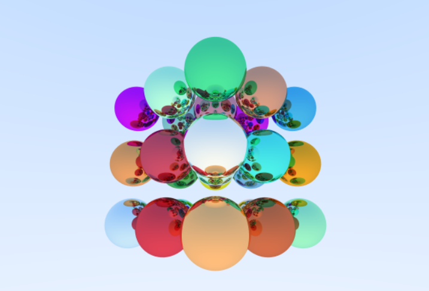
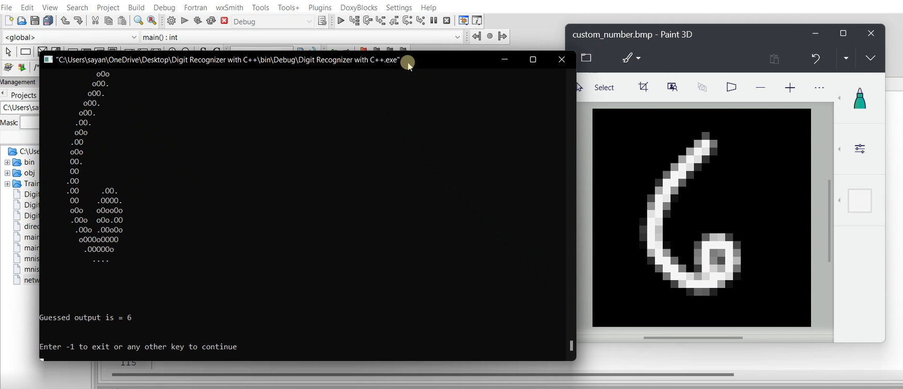
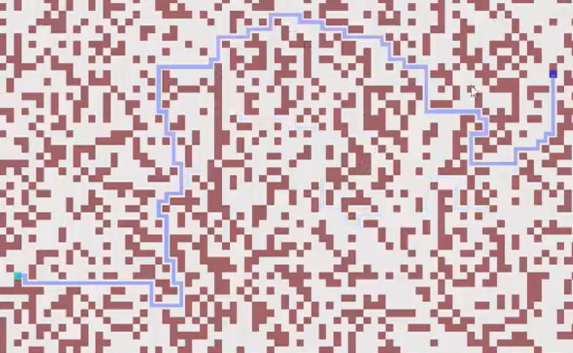
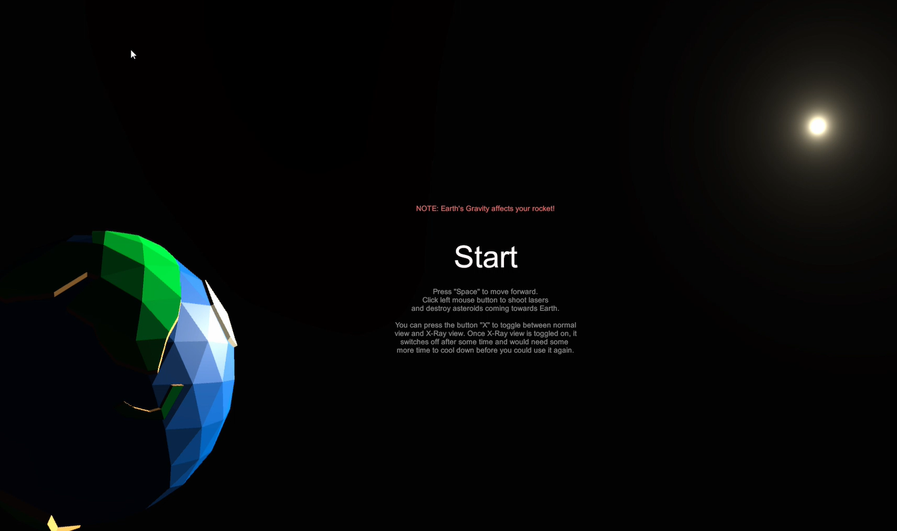
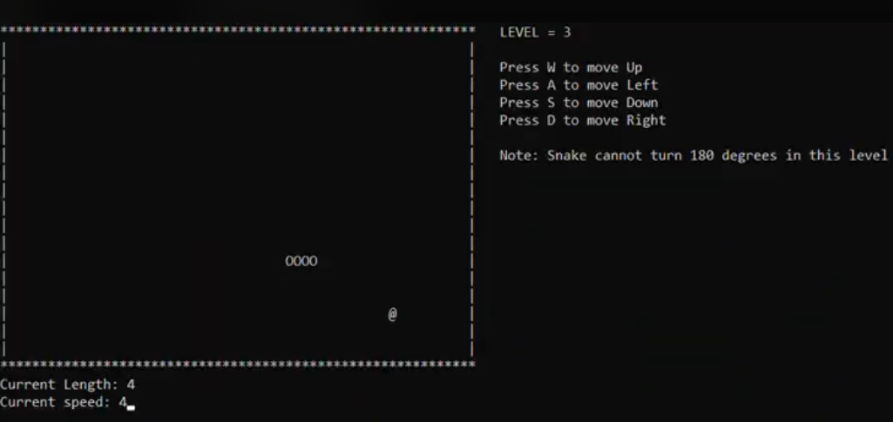

Hello! My Name is Sayan Bakshi.
I
Welcome to my Portfolio
꧁ Projects ꧂

Multiplayer drawing app with chat functionality and
Customised avatar.

Ray
Tracer made with C++ and SDL2 which uses path tracing technique to render frames.

A simple
neural network that can recognize handwritten digits.

A
web based simulation made with GodotEngine where you can find the shortest path in an unweighted path.

The
classic asteroids game redesigned in
3D. Created during my first hackathon, Hack-cade, 2021 in 48 hours.

The
retro snake game in ascii playable on the windows console made with C++.
About Me
Hello! My name is Sayan Bakshi and I am currently an undergraduate student pursuing a Bachelor's degree in Computer Science and Engineering from Panjab University.
I have a strong passion for technology and programming, and have honed my skills in several programming languages, including C/C++, HTML, CSS, JavaScript, and SQL. Additionally, I have hands-on experience with the MERN stack. I am also just starting out in the world of cloud computing and have a beginner's understanding of AWS, demonstrating my versatility and commitment to staying up-to-date with industry advancements. I also have a strong foundation in data structures and algorithms along with understanding of OOPS, OS and DBMS.
I have practical experience working in a startup, where I was responsible for building the first version of their web application and deploying it over the cloud. This hands-on experience has taught me the importance of teamwork, attention to detail, and efficient problem-solving.
Aside from my professional work, I am also an avid lover of competitive programming. The thrill of racing against the clock to solve a problem continues to drive me every day. Competitive programming and development both, got the curious little kid inside me awake again, experimenting with things knowing no bounds.
Thank you for visiting my portfolio. I am excited to continue my education and professional development as I work towards my goal of becoming a skilled software engineer.